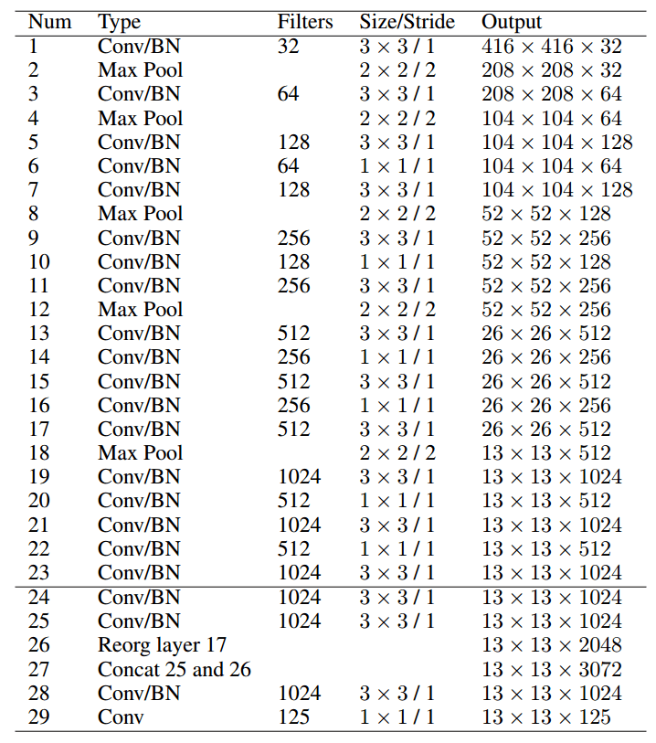

资源
全文
Abstract
-
YOLO 已成为机器人、无人驾驶汽车和视频监控应用的中心实时物体检测系统。
-
我们对 YOLO 的演变进行了全面分析，考察了从最初的 YOLO 到 YOLOv8 的每一次迭代中的创新和贡献。
- 我们从描述标准度量和后处理开始；然后，
- 我们讨论了网络体系结构的主要变化以及每个模型的训练技巧。
- 最后，我们总结了 YOLO 发展的重要经验教训，并对其未来进行了展望，强调了增强实时目标检测系统的潜在研究方向。
1 Introduction
YOLO 的发展历史：
2 YOLO Applications Across Diverse Fields
YOLO 在不同领域的应用
-
YOLO 的实时物体检测能力在自动驾驶汽车系统中是非常宝贵的，能够快速识别和跟踪各种物体，如车辆、行人、自行车和其他障碍物。
这些功能已应用于许多领域，包括监控视频序列中的动作识别、运动分析和人机交互。
-
YOLO 模型已在农业中用于检测和分类作物、病虫害，有助于精确农业技术和农业过程自动化。它们还适用于生物识别、安全和面部识别系统中的人脸检测任务。
-
在医学领域，YOLO 已被用于癌症检测、皮肤分割和药丸识别，从而提高了诊断准确性和更有效的治疗过程。
-
在遥感领域，它已被用于卫星和航空图像中的物体检测和分类，有助于土地利用测绘、城市规划和环境监测。
-
安全系统集成了 YOLO 模型，用于实时监控和分析视频源，允许快速检测可疑活动、保持社交距离和口罩检测。该模型还应用于表面检测，以检测缺陷和异常，加强制造和生产过程中的质量控制。
-
在交通应用中，YOLO 模型已被用于车牌检测和交通标志识别等任务，为智能交通系统和交通管理解决方案的开发做出了贡献。
-
它们已被用于野生动物检测和监测，以识别濒危物种，用于生物多样性保护和生态系统管理。
-
最后，YOLO 已被广泛用于机器人应用和无人机物体检测。
3 Object Detection Metrics and Non-Maximum Suppression (NMS)
对象检测度量和非最大值抑制（NMS）
-
平均精度（AP），传统上称为平均精度（mAP），是评估对象检测模型性能的常用指标。它测量所有类别的平均精度，提供一个值来比较不同的模型。COCO 数据集没有区分 AP 和 AP（应该是 mAP？）。在本文的其余部分中，我们将把这个度量称为 AP。
-
在 YOLOv1 和 YOLOv2 中，用于训练和基准测试的数据集是 PASCAL VOC 2007 和 VOC 2012。然而，从 YOLOv3 开始，使用的数据集是 Microsoft COCO（上下文中的公共对象）。这些数据集的 AP 计算方式不同。以下部分将讨论 AP 背后的基本原理，并解释如何计算。
3.1 How AP works?
AP 度量基于 precision-recall 度量，处理多个对象类别，并使用并集交集（IoU）定义正预测。
-
P 和 R
-
P 衡量模型正例预测的准确性，
-
R 衡量模型正确识别的实际正例的比例。
-
准确度和召回率之间往往存在权衡；例如，增加检测到的对象的数量（较高的召回率）可能会导致更多的误报（较低的精度）。
为了考虑这种权衡，AP 度量包含了 P-R 曲线，该曲线绘制了不同置信阈值的精确度与召回的关系。该指标通过考虑精度-召回曲线下的区域，对 P 和 R 进行平衡评估。
-
-
处理多个对象类别
- 对象检测模型必须识别和定位图像中的多个对象类型。
- AP 度量通过分别计算每个类别的平均精度（AP），然后取所有类别中这些 AP 的平均值来解决这一问题（这就是为什么它也被称为平均精度）。这种方法确保对每个类别的模型性能进行单独评估，从而对模型的整体性能进行更全面的评估。
-
IoU
- 对象检测旨在通过预测边界框来准确定位图像中的对象。AP 度量结合了并集交集（IoU）度量来评估预测边界框的质量。IoU 是预测边界框和 GT 边界框的相交面积与并集面积的比率。它测量 GT 和预测边界框之间的重叠。
- COCO 基准考虑了多个 IoU 阈值，以评估模型在不同定位精度水平下的性能。
a) IoU 是通过将两个方框的交集除以方框的并集来计算的
b) 不同 box 位置的三个不同 IoU 值的示例
3.2 Computing AP
VOC Dataset
该数据集包括 20 个对象类别。要计算 VOC 中的 AP，我们遵循以下步骤：
-
对于每个类别，通过改变模型预测的置信阈值来计算 P-R 曲线。
-
使用 P-R 曲线的插值 11 个点采样计算每个类别的平均精度（AP）
-
通过取所有 20 个类别的 AP 的平均值来计算最终平均精度（AP）。
Microsoft COCO Dataset
该数据集包括 80 个对象类别，并使用更复杂的方法来计算 AP。它不是使用 11 点插值，而是使用 101 点插值，即，它以 0.01 的增量计算 101 个召回阈值从 0 到 1 的精度。此外，AP 是通过对多个 IoU 值进行平均而不是仅对一个值进行平均来获得的，除了称为 的公共 AP 度量， 是针对 0.5 的单个 IoU 阈值的 AP。在 COCO 中计算 AP 的步骤如下：
-
对于每个类别，通过改变模型预测的置信阈值来计算精度-召回曲线。
-
使用 101 个召回阈值计算每个类别的平均精度（AP）。
-
计算不同并集交叉点（IoU）阈值处的 AP，通常从 0.5 到 0.95，步长为 0.05。更高的 IoU 阈值需要更准确的预测才能被认为是真正的正例。
-
对于每个 IoU 阈值，取所有 80 个类别中 AP 的平均值。
-
最后，通过对在每个 IoU 阈值处计算的 AP 值取平均值来计算总 AP。
AP 计算的差异使得很难直接比较两个数据集的对象检测模型的性能。当前标准使用 COCO AP，因为它更细粒度地评估模型在不同 IoU 阈值下的性能。
3.3 Non-Maximum Suppression (NMS)
**非最大值抑制（NMS）**是一种后处理技术，用于对象检测算法，以减少重叠边界框的数量并提高整体检测质量。
对象检测算法通常在具有不同置信度分数的同一对象周围生成多个边界框。NMS 过滤掉冗余和不相关的边界框，只保留最准确的边界框。
a) 显示包含多个重叠框的对象检测模型的典型输出。
b) 显示 NMS 之后的输出。
4 YOLO: You Only Look Once
Joseph Redmon 等人的 YOLO 发表在 2016 年 CVPR 上。它首次提出了一种用于对象检测的实时端到端方法。YOLO 这个名字代表“你只看一次”，指的是它能够通过一次网络完成检测任务，而以前的方法要么使用滑动窗口，然后使用分类器，每个图像需要运行数百或数千次，要么使用更先进的方法将任务分为两个步骤，其中第一步骤检测具有对象或区域建议的可能区域，并且第二步骤对建议运行分类器。此外，YOLO 使用仅基于回归的更直接的输出来预测检测输出，而 Fast R-CNN 使用两个单独的输出，概率分类和框坐标回归。
4.1 How YOLOv1 works?
YOLOv1 通过同时检测所有边界框来统一对象检测步骤。为了实现这一点，YOLO 将输入图像划分为 网格，并预测同一类的 个边界框，以及每个网格元素对 个不同类的置信度。
- 每个边界框预测由五个值组成：
- 其中 是方框的置信度分数，反映了模型对方框包含对象的置信度以及方框的准确性。
- 和 坐标是方框相对于网格单元的中心，
- 和 是方框相对于完整图像的高度和宽度。YOLO 的输出是 的张量，可选地随后是非最大值抑制 (NMS) 以去除重复检测。
在 YOLO 的原始论文中，作者使用了 PASCAL VOC 数据集，该数据集包含 个类（）； 的网格（），每个网格元素最多 类（），给出 的输出预测。
YOLOv1 在 PASCAL VOC2007 数据集上实现了 63.4 的平均精度。
4.2 YOLOv1 Architecture
YOLOv1 体系结构包括 24 个卷积层，后面是两个全连接层，用于预测边界框坐标和概率。除最后一层使用线性激活函数外，所有层均使用Leaky ReLU。受 GoogLeNet 和 Network in Network 的启发，YOLO 使用 1×1 卷积层来减少特征图的数量，并保持相对较低的参数数量。
4.3 YOLOv1 Training
作者使用 ImageNet 数据集以 的分辨率预训练了 YOLO 的前 20 层。然后，他们添加了具有随机初始化权重的最后 4 层，并使用 PASCAL VOC 2007 和 VOC 2012 数据集以 的分辨率对模型进行微调，以增加细节，从而实现更准确的目标检测。
对于数据增强，作者使用了最多为输入图像大小 20% 的随机缩放和平移，以及 HSV 颜色空间中上限因子为 1.5 的随机曝光和饱和度。
YOLOv1 使用了一个由多个平方和误差组成的损失函数。在损失函数中， 是一个比例因子，它赋予边界框预测更大的重要性，而 则是一个降低不包含对象的框的重要性的比例因子。
- 损失的前两项表示 Localization loss；它计算预测的边界框位置 和大小 中的误差。请注意，这些错误仅在包含对象（由1obj-ij表示）的框中计算，只有在该网格单元中存在对象时才会受到惩罚。
- 第三和第四损失项表示 Confidence loss；第三项测量当在框中检测到对象时的置信误差（），而第四项测量当未在框中探测到对象时（）的置信误差。由于大多数盒子都是空的，因此这种损失由 项加权。
- 最后的损失分量是 Classification loss，它仅在对象出现在单元格中时测量每个类别的类别条件概率的平方误差（）。
4.4 YOLOv1 Strengths and Limitations
YOLO 的简单架构，加上其新颖的全图像一次回归，使其比现有的物体探测器快得多，从而实现实时性能。
然而，尽管 YOLO 的执行速度比任何物体检测器都快，但与最先进的方法（如 Fast R-CNN）相比，定位误差更大。造成这种限制的主要原因有三个：
-
它在网格单元中最多只能检测到两个同类对象，这限制了它预测附近对象的能力。
-
它很难预测训练数据中没有的长宽比对象。
-
它从下采样层导致的粗略对象特征中学习。
5 YOLOv2: Better, Faster, and Stronger
YOLOv2 由 Joseph Redmon 和 Ali Farhadi 发表在 CVPR 2017上。它在最初的YOLO基础上进行了几项改进，使其变得更好，保持相同的速度和更强——能够检测 9000 个类别！改进如下：
-
所有卷积层上的 Batch normaliztion 提高了收敛性，并充当了减少过拟合的正则化器。
-
High-resolution classifier：与 YOLOv1 一样，用 ImageNet 以 的速度对模型进行了预训练。然而，这一次，他们在 ImageNet 上以 的分辨率对模型进行了 10 个 epochs 的微调，提高了在更高分辨率输入下的网络性能。
-
Fully convolutional：去除了密集层，并使用了完全卷积的架构。
-
Use anchor boxes to predict bounding boxes：这些框具有预定义的形状，用于匹配对象的原型形状。为每个网格单元定义了多个定位框，系统预测每个定位框的坐标和类。网络输出的大小与每个网格单元的锚盒数量成比例。
- Dimension Clusters：挑选好的先验框有助于网络学习预测更准确的边界框。作者对训练边界框进行 k-means 聚类，以找到良好的先验。他们选择了五个先前的盒子，在召回和模型复杂性之间进行了很好的权衡。
- Direct location prediction：与其他预测偏移的方法不同，YOLOv2 遵循相同的原理，并预测相对于网格单元的位置坐标。该网络为每个单元预测五个边界框，每个边界框有五个值 、、、 和 ，其中 相当于 YOLOv1 中的 。
Bounding boxes prediction.。盒子的中心坐标是用预测的 ， 值通过 sigmoid 函数获得的，并偏移网格单元 ， 的位置。最终盒子的宽度和高度分别使用按 和 缩放的先前宽度 和高度 ，其中 和 由 YOLOv2 预测。
- Finner-grained features：与 YOLOv1 相比，YOLOv2 去除了一个池化层，以获得 的输入图像的 的输出特征图或网格。YOLOv2 还使用了一个穿透层，该层获取 的特征图，并通过将相邻特征堆叠到不同的通道中来重新组织它，而不是通过空间子采样丢失它们。这生成在通道维度中与较低分辨率的 映射串联的 特征映射，以获得 特征映射。

- Multi-scale training：由于 YOLOv2 不使用完全连接的层，因此输入可以是不同的大小。为了使 YOLOv2 对不同的输入大小具有鲁棒性，作者随机训练了模型，每十批将输入大小从 更改为 。
通过所有这些改进，YOLOv2 在 PASCAL VOC2007 数据集上的平均精度（AP）为 78.6%，而 YOLOv1 的平均精度为 63.4%。
5.1 YOLOv2 Architecture
YOLOv2 使用的主干架构称为 Darknet-19，包含 19 个卷积层和 5 个最大池化层。与 YOLOv1 的架构类似，它的灵感来源于网络中的网络，使用 之间的 卷积来减少参数的数量。此外，如上所述，它们使用批处理规范化来正则化并帮助收敛。
对象分类头将最后四个卷积层替换为具有 1000 个滤波器的单个卷积层，然后是全局平均池化层和 Softmax。
5.2 YOLO9000 is a stronger YOLOv2
在同一篇论文中，作者介绍了一种训练联合分类和检测的方法。它使用来自 COCO 的检测标记数据来学习边界框坐标和来自 ImageNet 的分类数据，以增加它可以检测的类别数量。在训练期间，他们组合了两个数据集，使得当使用检测训练图像时，它对检测网络进行反向传播，而当使用分类训练图像时则对体系结构的分类部分进行反向传播。结果是 YOLO 模型能够检测 9000 多个类别，因此被命名为 YOLO9000。
6 YOLOv3
YOLOv3 于 2018 年由 Joseph Redmon 和 Ali Farhadi 在 ArXiv 上发表。它包括了重大的更改和更大的体系结构，以在保持实时性能的同时与最先进的技术并驾齐驱。在下文中，我们描述了与 YOLOv2 相关的更改。
-
Bounding box prediction：与 YOLOv2 一样，网络为每个边界框 、、 和 预测四个坐标；然而，这一次，YOLOv3 使用逻辑回归预测每个边界框的对象性得分。该分数对于与地面实况重叠最高的锚框为 1，对于其余锚框为 0。YOLOv3 与 Faster R-CNN 相反，只为每个地面实况对象分配一个锚框。此外，如果没有将锚框分配给对象，则只会导致分类损失，而不会导致定位损失或置信度损失。
-
Class Prediction：他们没有使用 softmax 进行分类，而是使用二进制交叉熵来训练独立的逻辑分类器，并将问题归结为多标签分类。这一变化允许将多个标签分配给同一个框，这可能发生在一些具有重叠标签的复杂数据集上。例如，同一个对象可以是 Person 和 Man。
-
New backbone：YOLOv3 的特点是由 53 个具有残差连接的卷积层组成的更大的特征提取器。
-
Spatial pyramid pooling (SPP) ：尽管论文中没有提到，但作者还向主干添加了一个修改的 SPP 块，该块连接多个最大池输出，而无需子采样（stride=1），每个输出具有不同的内核大小 ，其中 ，从而允许更大的感受野。这个版本被称为 YOLOv3-spp，是性能最好的版本，将 提高了 2.7%。
-
Multi-scale Predictions：与特征金字塔网络类似，YOLOv3 在三个不同的尺度上预测三个盒子。
-
Bounding box priors：与 YOLOv2 一样，作者也使用 k-means 来确定锚盒的边界盒先验。不同的是，在 YOLOv2 中，他们每个单元总共使用了 5 个先验框，而在 YOLOv3 中，他们对三种不同的规模使用了 3 个先验框。
6.1 YOLOv3 Architecture
YOLOv3 中提出的架构主干称为 Darknet-53。它用跨步卷积取代了所有最大池化层，并添加了残差连接。它总共包含 53 个卷积层。
Darknet-53 主干获得了与 ResNet-152 相当的 Top-1 和 Top-5 精度，但速度几乎快了 2 倍。
6.2 YOLOv3 Multi-Scale Predictions
除了更大的架构外，YOLOv3 的一个基本特征是多尺度预测，即多个网格大小的预测。这有助于获得更精细的细节框，并显著改进对小物体的预测，这是 YOLO 早期版本的主要弱点之一。
标记为 的第一个输出等效于 YOLOv2 输出，其中 网格定义了输出。第二输出 是通过将 Darknet-53 的（）之后的输出与（）。特征图具有不同的大小，即 和 ，因此在级联之前存在上采样操作。最后，使用上采样操作，第三输出 将 特征图与 特征图连接起来。
对于具有 个类别的 COCO 数据集，每个尺度提供一个形状为 的输出张量，其中 是特征图（或网格单元）的大小， 表示每个单元的框， 包括四个坐标和对象性得分。
6.3 YOLOv3 Results
当 YOLOv3 发布时，对象检测的基准已从 PASCAL VOC 更改为Microsoft COCO。因此，从现在起，所有 YOLO 都将在 MS COCO 数据集中进行评估。YOLOv3 spp 在 20 FPS 时实现了 36.2% 的平均精度AP 和 60.6% 的 AP，达到了当时最先进的水平，速度快了 2 倍。
7 Backbone, Neck, and Head
这时，目标检测的结构开始分为三个部分：backbone、neck 和 head。
-
Backbone 负责从输入图像中提取有用的特征。它通常是在大规模图像分类任务（如 ImageNet）上训练的卷积神经网络（CNN）。主干捕获不同尺度的层次特征，较低级别的特征（例如，边缘和纹理）在较早的层中提取，而较高级别的特征，例如，对象部分和语义信息，在较深的层中被提取。
-
Neck 它聚合和细化主干提取的特征，通常侧重于增强不同尺度的空间和语义信息。可以包括额外的卷积层、特征金字塔网络（FPN）或其他机制来改进特征的表示。
-
Head 是物体探测器的最终部件；它负责根据骨干和颈部提供的特征进行预测。它通常由一个或多个特定任务的子网络组成，这些子网络执行分类、定位，以及最近的实例分割和姿态估计。头部处理颈部提供的特征，为每个候选对象生成预测。最后，后处理步骤，如非最大值抑制（NMS），过滤掉重叠的预测，只保留最可靠的检测。
在剩下的 YOLO 模型中，我们将描述使用主干、颈部和头部的体系结构。
8 YOLOv4
YOLOv4 试图通过试验许多分类为 bag-of-freebies 和 bag-of-specials 的变化来找到最佳平衡。bag-of-freebies 是只改变训练策略、增加训练成本但不增加推理时间的方法，最常见的是数据扩充。另一方面，bag-of-specials 是稍微增加推理成本但显著提高准确性的方法。这些方法的例子包括扩大感受野、组合特征和后处理等。
-
An Enhanced Architecture with Bag-of-Specials (BoS) Integration. 作者尝试了多种骨干架构，如 ResNeXt50、EfficientNet-B3 和 Darknet-53。性能最好的架构是对 Darknet-53 进行了修改，使用跨阶段部分连接（CSPNet），Mish 激活功能[57]作为 backbone。对于 neck，他们使用了来自 YOLOv3 SPP 的空间金字塔池（SPP）的修改版本和 YOLOv3 中的多尺度预测，但使用了路径聚合网络（PANet）的修改版本而不是 FPN，以及修改的空间注意力模块（SAM）。最后，对于探测头，他们使用 YOLOv3 中的锚。因此，该模型被称为 CSPDarket53-PANet-SPP。添加到 Darknet-53 的跨阶段部分连接（CSP）有助于减少模型的计算，同时保持相同的精度。SPP 阻断，如 YOLOv3 中的 SPP，在不影响推理速度的情况下增加了感受野。PANet 的修改版本将这些功能连接起来，而不是像最初的 PANet 论文中那样添加它们。
-
**Integrating bag-of-freebies (BoF) for an Advanced Training Approach. **除了随机亮度、对比度、缩放、裁剪、翻转和旋转等常规增强外，作者还实现了马赛克增强，将四个图像组合成一个图像，从而可以检测到通常背景之外的对象，并减少了对批量归一化的大型小批量的需要。对于正则化，他们使用 DropBlock 来代替 Dropout，但用于卷积神经网络以及类标签平滑。对于检测器，他们添加了 CIoU 损失和跨迷你槽归一化（CmBN），用于从整个批次收集统计数据，而不是像常规批次归一化那样从单个迷你批次收集统计信息。
-
Self-adversarial Training (SAT)。为了使模型对扰动更具鲁棒性，对输入图像进行对抗性攻击，以创建一个欺骗，即地面实况对象不在图像中，但保留原始标签以检测正确的对象。
-
Hyperparameter Optimization with Genetic Algorithms，他们在前 10% 的周期上使用遗传算法，并使用余弦退火调度器来改变训练期间的学习率。它开始慢慢降低学习率，然后在训练过程的中途快速降低，最后略有降低。
主干和探测器的 BoF 和 BoS 的最终选择。
8.1 YOLOv4 Results
在 MS COCO 数据集测试开发 2017 上进行评估，YOLOv4 在 NVIDIA V100 上以超过 50 FPS 的帧速率实现了 43.5% 的 AP 和 65.7% 的 AP50。
9 YOLOv5
YOLOv5 于 2020 年由 Glenn Jocher 在 YOLOv4 发布几个月后发布。在撰写本文时，还没有关于 YOLOv5 的科学论文，但从代码中，我们知道它使用了 YOLOv4 部分中描述的许多改进，主要区别在于它是在Pytorch 而不是 Darknet 中开发的。
YOLOv5 是开源的，由 Ultralytics 积极维护，有 250 多个贡献者，经常有新的改进。YOLOv5 易于使用、训练和部署。Ultralytics 提供适用于 iOS 和 Android 的移动版本，以及用于标记、培训和部署的许多集成。
YOLOv5提供了五个缩放版本：YOLOv5n（纳米）、YOLOv5s（小型）、YOLOv5m（中型）、YOLOv5l（大型）和YOLOv5x（特大型）。
在撰写本文时，YOLOv5发布的版本是7.0版，包括能够进行分类和实例分割的YOLOv5。
9.1 YOLOv5 Results
在 2017 年的 MS COCO 数据集测试开发中进行评估，YOLOv5x 获得了 50.7% 的 AP，图像大小为 640 像素。
使用 32 的批量大小，它可以在 NVIDIA V100 上实现 200 FPS 的速度。使用 1536 像素的较大输入大小，YOLOv5 实现了 55.8% 的 AP。
10 Scaled-YOLOv4
YOLOv4 一年后，同一作者在 CVPR 2021 中提出了 Scaled YOLOv4。与 YOLOv4 不同，Scaled YOLOv4 是在 Pytorch 而不是 Darknet 中开发的。主要的新颖之处在于引入了放大和缩小技术。放大意味着生成一个以较低速度为代价提高精度的模型；另一方面，按比例缩小需要生成一个以牺牲精度为代价提高速度的模型。此外，按比例缩小的模型需要更少的计算能力，并且可以在嵌入式系统上运行。
按比例缩小的体系结构被称为 YOLOv4-tiny；它是为低端 GPU 设计的，在 Jetson TX2 上可以以 46 FPS 或在 RTX2080Ti 上以 440 FPS 运行，在MS COCO上实现 22% 的 AP。
按比例放大的模型架构称为 YOLOv4 大型，包括三种不同尺寸的 P5、P6 和 P7。该架构是为云 GPU 设计的，并实现了最先进的性能，在 MS COCO 上以 56% 的 AP 超过了以前的所有型号。
11 YOLOR
YOLOR 由 YOLOv4 的同一研究团队于 2021 年 5 月发表在 ArXiv 上。它代表“You Only Learn One Representation”。在这篇论文中，作者采用了不同的方法；他们开发了一种多任务学习方法，旨在通过学习通用表示并使用子网络创建特定任务的表示，为各种任务（例如，分类、检测、姿态估计）创建单一模型。鉴于传统的联合学习方法通常会导致次优特征生成，YOLOR 旨在通过编码神经网络的隐式知识来克服这一问题，将其应用于多个任务，类似于人类如何利用过去的经验来处理新问题。结果表明，将隐式知识引入神经网络对所有任务都有好处。
在 2017 年的 MS COCO 数据集测试开发中，YOLOR 在 NVIDIA V100 上以 30 FPS 的帧速率实现了 55.4% 的 AP 和 73.3% 的 AP50。
12 YOLOX
YOLOX 由 Megvii Technology 的一个研究团队于 2021 年 7 月发表在 ArXiv 上。它在 Pytorch 中开发，以 Ultralytics 的 YOLOV3 为起点，有五个主要变化：无锚架构、多个阳性、去耦头、高级标签分配和强增强。
2021 年，它在速度和精度之间取得了最佳平衡，在特斯拉 V100 上以 68.9% 的 FPS 获得了 50.1% 的 AP。在下文中，我们描述了 YOLOX 相对于 YOLOv3 的五个主要变化：
-
Anchor-free。自 YOLOv2 以来，所有后续的 YOLO 版本都是基于锚点的检测器。YOLOX 受到 CornerNet、CenterNet 和 FCOS 等无锚最先进对象检测器的启发，回归到无锚架构，简化了训练和解码过程。与 YOLOv3 基线相比，无锚使 AP 增加了 0.9 分。
-
Multi positives。为了弥补因缺乏锚而产生的巨大不平衡，作者使用了中心抽样，其中他们将中心 区域指定为正例。这种方法使 AP 提高了 2.1 分。
-
Decoupled head。研究表明分类置信度和定位精度之间可能存在偏差。因此，YOLOX 将这两者分为两个头部，一个用于分类任务，另一个用于回归任务，将 AP 提高了 1.1 点，并加快了模型收敛。
-
Advanced label assignment。研究表明，当多个对象的框重叠时，地面实况标签分配可能具有模糊性，并将分配过程公式化为最优传输（OT）问题。YOLOX 受到这部作品的启发，提出了一个名为 simOTA 的简化版本。这一变化使 AP 提高了 2.3 分。
-
Strong augmentations。YOLOX 使用 MixUP 和 Mosaic 增强。作者发现，在使用这些增强后，ImageNet 预训练不再有益。强增强使 AP 增加了 2.4 个点。
13 YOLOv6
YOLOv6 由美团视觉 AI 部门于 2022 年 9 月在 ArXiv 上发表。与 YOLOv4 和 YOLOv5 类似，它为工业应用提供了不同尺寸的各种型号。遵循基于锚点的方法的趋势，YOLOv6 采用了无锚点检测器。该模型的主要新颖之处总结如下：
-
一种基于 RepVGG 的新 backbone 称为 EfficientRep，它比以前的 YOLO 主干使用更高的并行性。对于 neck，对于较大的型号，他们使用用RepBlocks 或 CSPStackRep 块增强的 PAN。受 YOLOX 的启发，他们开发了一种高效的解耦磁头。
-
使用 TOOD 中引入的任务对齐学习方法进行标签分配。
-
新的分类和回归损失。他们使用了 VariFocul 损失和 SIoU/GIoU 回归损失的分类。
-
回归和分类任务的自蒸馏策略。
-
使用 RepOptimizer 和通道蒸馏进行检测的量化方案，有助于实现更快的检测器。
13.1 YOLOv6 Results
在 MS COCO 数据集测试开发 2017 上进行评估，YOLOv6-L 在 NVIDIA Tesla T4 上以约 50 FPS 的帧速率实现了 52.5% 的 AP 和 70% 的 AP50。
14 YOLOv7
YOLOv7 由 YOLOv4 和 YOLOR 的同一作者于 2022 年 7 月发表在 ArXiv 上。当时，它在 5 FPS 到 160 FPS 的速度和精度范围内超过了所有已知的物体探测器。与 YOLOv4 一样，它只使用 MS COCO 数据集进行训练，而没有预先训练的骨干。
YOLOv7 的架构变化如下：
-
扩展高效层聚合网络（E-ELAN）。ELAN 是一种允许深度模型通过控制最短最长梯度路径来更有效地学习和收敛的策略。YOLOv7 提出了适用于具有无限堆叠计算块的模型的 E-ELAN。E-ELAN 通过洗牌和合并基数来结合不同组的特征，在不破坏原始梯度路径的情况下增强网络的学习能力。
-
基于级联的模型的模型缩放。缩放通过调整一些模型属性来生成不同大小的模型。YOLOv7 的体系结构是基于级联的体系结构，其中诸如深度缩放之类的标准缩放技术导致转换层的输入通道和输出通道之间的比率变化，这反过来又导致模型的硬件使用的减少。YOLOv7 提出了一种新的基于级联的模型缩放策略，其中块的深度和宽度以相同的因子进行缩放，以保持模型的最佳结构。
YOLOv7 中使用的 bag-of-freebies 包括：
-
Planned re-parameterized convolution。与 YOLOv6 一样，YOLOv7 的架构也受到重新参数化卷积（RepConv）的启发。然而，他们发现 RepConv 中的身份连接破坏了 ResNet 中的残差和 DenseNet 中的级联。出于这个原因，他们删除了身份连接，并将其称为 RepConvN。
-
Coarse label assignment for auxiliary head and fine label assignment for the lead head。引导头负责最终输出，辅助头协助训练。
-
Batch normalization in conv-bn-activation。这在推理阶段将批量归一化的均值和方差集成到卷积层的偏差和权重中。
-
Implicit knowledge inspired in YOLOR。
-
Exponential moving average 作为最终推理模型。
14.1 Comparison with YOLOv4 and YOLOR
在本节中，我们将重点介绍与同一作者开发的先前 YOLO 模型相比， YOLOv7 的增强功能。
与 YOLOv4 相比，YOLOv7 实现了 75% 的参数减少和 36% 的计算减少，同时将平均精度（AP）提高了 1.5%。
与 YOLOv4 tiny 相比，YOLOv7 tiny 在保持相同 AP 的同时，成功地将参数和计算量分别减少了39%和49%。
最后，与 YOLOR 相比，YOLOv7 的参数数量和计算量分别减少了 43% 和 15%，AP 略有增加 0.4%。
14.2 YOLOv7 Results
在 MS COCO 数据集测试开发 2017 上进行评估，YOLOv7-E6 在 NVIDIA V100 上以 50 FPS 的速度输入 1280 像素，实现了 55.9% 的 AP 和 73.5% 的 AP50。
15 DAMO-YOLO
DAMO-YOLO 由阿里巴巴集团于 2022 年 11 月在 ArXiv 上发表。受当前技术的启发，DAMO-YOLO 包括以下内容：
-
A Neural architecture search (NAS) 他们使用了阿里巴巴开发的一种名为 MAE-NAS 的方法来自动找到一种高效的架构。
-
A large neck 受 GiraffeDet 、CSPNet 和 ELAN 的启发，作者设计了一种可以实时工作的颈部，称为高效 RepGFPN。
-
A small head 作者发现，large neck 和 small neck 产生更好的性能，他们只留下一个线性层用于分类，一个用于回归。他们称这种方法为 ZeroHead。
-
AlignedOTA label assignment 动态标签分配方法，如 OTA 和 TOOD，由于其对静态方法的显著改进而广受欢迎。然而，分类和回归之间的错位仍然是一个问题，部分原因是分类和回归损失之间的不平衡。为了解决这个问题，他们的 AlignOTA 方法将焦点损失引入分类成本，并使用预测和 GT 框的 IoU 作为软标签，从而能够为每个目标选择对齐的样本，并从全局角度解决问题。
-
Knowledge distillation 他们提出的策略包括两个阶段：第一阶段由老师指导学生，第二阶段由学生独立微调。此外，它们在提取方法中包含了两个增强功能：对齐模块，它将学生特征调整为与教师相同的分辨率；通道动态温度，它将教师和学生特征标准化，以减少实际价值差异的影响。
作者生成了名为 DAMO YOLO Tiny/Small/Medium 的缩放模型，其中最好的模型在 NVIDIA V100 上以 233 FPS 的速度实现了 50.0% 的 AP。
16 YOLOv8
YOLOv8 由开发 YOLOv5 的 Ultralytics 公司于 2023 年 1 月发布。由于在撰写本文时，还没有关于 YOLOv8 的论文，因此与其他 YOLO 版本相比，我们需要深入了解架构决策。按照目前的趋势，YOLOv8 是无锚的，减少了框预测的数量，并加快了非最大印象（NMS）。此外， YOLOv8 在训练中使用马赛克增强；
YOLOv8 可以从命令行界面（CLI）运行，也可以作为 PIP 包安装。此外，它还提供了用于标记、培训和部署的多个集成。
YOLOv8 提供了五个缩放版本：YOLOv8n（纳米）、YOLOv8s（小型）、YOLOv8m（中型）、YOLOv8l（大型）和 YOLOv8x（特大型）
16.1 YOLOv8 Results
在 MS COCO 数据集测试开发 2017 上进行评估，YOLOv8x 在 NVIDIA A100 和 TensorRT 上以 280 FPS 的速度实现了 53.9% 的 AP，图像大小为 640 像素（相比之下，在相同输入大小下 YOLOv5 的 AP 为 50.7%）。
17 PP-YOLO, PP-YOLOv2, and PP-YOLOE
PP-YOLO 模型一直在与我们描述的 YOLO 模型并行增长。然而，我们决定将它们分组在一个单独的部分中，因为它们从 YOLOv3 开始，并且在以前的 PP-YOLO 版本的基础上逐渐改进。然而，这些模型在 YOLO 的发展过程中产生了影响。PP-YOLO 类似于 YOLOv4，YOLOv5 基于 YOLOv3。百度股份有限公司的研究人员于 2020 年 7 月在 ArXiv 上发表了这篇文章。
使用飞桨深度学习平台，因此其 PP 名称。
-
A ResNet50-vd backbone 取代了 DarkNet-53 主干，该主干具有在最后阶段增强了可变形卷积的架构和提取的预训练模型，该模型在 ImageNet 上具有更高的分类精度。这种体系结构被称为 ResNet5-vd-dcn。
-
A larger batch size 为了提高训练稳定性，他们从 64 增加到 192，同时更新了训练计划和学习率。
-
保持训练参数的 Maintained moving averages，并使用它们来代替最终训练值。
-
DropBlock 仅应用于 FPN。
-
在另一个分支中添加 IoU 损失以及用于边界框回归的 L1 损失。
-
添加 IoU 预测分支以测量定位精度以及 IoU 感知损失。在推理过程中，YOLOv3 乘以分类概率和客观性得分来计算最终检测，PP-YOLO 还乘以预测的 IoU 来考虑定位精度。
-
使用类似于 YOLOv4 的网格敏感方法来改进网格边界处的边界框中心预测。
-
使用 Matrix NMS，它可以并行运行，比传统 NMS 更快。
-
CoordConv 用于 FPN 的 1×1 卷积，并用于检测头中的第一个卷积层。CoordConv 允许网络学习平移不变性，从而改进检测定位。
-
空间金字塔池仅用于顶部特征图，以增加主干的感受野。
17.1 PP-YOLO augmentations and preprocessing
PP-YOLO 使用了以下增强和预处理：
-
混合训练，权重从 分布中取样，其中 ，。
-
随机颜色失真。
-
随机拉伸。
-
概率为 0.5 的随机裁剪和随机翻转。
-
RGB 通道 z-score 归一化，平均值为 ，标准偏差为 。
-
从 均匀绘制的多个图像大小。
17.2 PP-YOLO results
在 2017 年的 MS COCO 数据集测试开发中评估，PP-YOLO 在 NVIDIA V100 上以 73 FPS 的帧速率实现了 45.9% 的 AP 和 65.2% 的 AP50。
17.3 PP-YOLOv2
PP-YOLOv2 于 2021 年 4 月在 ArXiv 上发布，并对 PP-YOLO 进行了四次改进，在 NVIDIA V100 上以 69 FPS 的帧速率将性能从 45.9% 的 AP 提高到 49.5% 的 AP。PP-YOLOv2 关于 PP-YOLO 的更改如下：
-
主干网从 ResNet50 更改为 ResNet101。
-
路径聚合网络（PAN），而不是类似于 YOLOv4 的 FPN。
-
Mish Activation Function。与 YOLOv4 和 YOLOv5 不同，他们只在检测颈部应用了 mish 激活功能，以保持 ReLU 的主干不变。
-
较大的输入大小有助于提高小对象的性能。他们将最大输入大小从 608 扩展到 768，并将每个 GPU 的批处理大小从 24 个减少到 12 个图像。输入大小均匀地从 中提取。
-
一个改进的 IoU 感知分支。他们使用软标签格式而不是软权重格式修改了 IoU 感知损失计算的计算。
17.4 PP-YOLOE
PP-YOLOE 于 2022 年 3 月在 ArXiv 上发表。它对 PP-YOLOv2 进行了改进，在 NVIDIA V100 上以 78.1 FPS 的速度实现了 51.4% 的 AP 性能。PP-YOLOE 关于 PP-YOLOv2 的主要变化是：
- Anchor-free 根据作品所推动的时代趋势，PP-YOLOE 使用了无锚架构。
- 新的 backbone 和 neck。受 TreeNet 的启发，作者使用 RepResBlocks 结合残差和密集连接修改了主干和颈部的架构。
- 任务对齐学习（TAL）。YOLOX 是第一个提出任务错位问题的人，在所有情况下，分类置信度和定位精度并不一致。为了减少这个问题，PP-YOLOE 实现了 TOOD 中提出的 TAL，其中包括动态标签分配和任务对齐丢失。
- 高效任务协调主管（ET主管）。与 YOLOX 不同，在 YOLOX 中，分类和定位头是解耦的，PP-YOLOE 使用了基于 TOOD 的单个头来提高速度和准确性。
- 变焦距（VFL）和分布焦距损失（DFL）。VFL 使用目标得分对阳性样本的损失进行加权，对IoU高的样本给予更高的权重。这将在训练过程中优先考虑高质量的样本。类似地，两者都使用 IoU 感知分类分数（IACS）作为目标，允许对分类和定位质量进行联合学习，从而实现训练和推理之间的一致性。另一方面，DFL 将 Focal Loss 从离散标签扩展到连续标签，从而能够成功优化结合质量估计和类别预测的改进表示。这允许准确描述真实数据中的灵活分布，消除了不一致的风险。
与之前的 YOLO 版本一样，作者通过改变 backbone 和 neck 的宽度和深度来生成多个缩放模型。这些型号被称为 PP-YOLOE-s（小型）、PP-YOLOE-m（中型）、PP-YOLOE-l（大型）和 PP-YOLOE-0（特大型）。
18 Discussion
本文研究了 15 个 YOLO 版本，从最初的 YOLO 模型到最新的 YOLOv8。从这个表中，我们可以确定几个关键模式：
-
锚：最初的 YOLO 模型相对简单，没有使用锚，而现有技术依赖于带锚的两级探测器。YOLOv2 结合了锚点，从而提高了边界框预测的准确性。这一趋势持续了五年，直到 YOLOX 推出了一种无锚方法，并取得了最先进的成果。从那时起，YOLO 的后续版本已经放弃了锚的使用。
-
框架：最初，YOLO 是使用 Darknet 框架开发的，随后的版本也紧随其后。然而，当 Ultralytics 将 YOLOv3 移植到 PyTorch 时，剩下的 YOLO 版本都是使用 PyTorch 开发的，这导致了增强功能的激增。使用的另一种深度学习语言是飞桨，这是百度最初开发的开源框架。
-
Backbone：随着时间的推移，YOLO 模型的骨干架构发生了重大变化。从包括简单卷积层和最大池化层的 Darknet 架构开始，后来的模型在 YOLOv4 中引入了跨阶段部分连接（CSP），在 YOLOv6 和 YOLOv7 中引入了重新参数化，在 DAMO-YOLO 中引入了神经架构搜索。
-
Performance：虽然 YOLO 模型的性能随着时间的推移有所提高，但值得注意的是，它们通常优先考虑平衡速度和准确性，而不是只关注准确性。这种折衷是 YOLO 框架的一个重要方面，允许跨各种应用程序进行实时对象检测。
18.1 Tradeoff between speed and accuracy
YOLO 系列的目标检测模型一直专注于平衡速度和精度，旨在在不牺牲检测结果质量的情况下提供实时性能。
从 Scaled YOLOv4 开始，所有官方 YOLO 模型都对速度和精度之间的权衡进行了微调，提供了不同的模型规模以适应特定的应用和硬件要求。例如，这些版本通常提供针对边缘设备优化的轻量级模型，以降低计算复杂性和更快的处理时间换取准确性。
19 The future of YOLO
随着 YOLO 框架的不断发展，我们预计以下趋势和可能性将影响未来的发展：
-
采用最新技术。研究人员和开发人员将继续利用深度学习、数据增强和训练技术中的最先进方法来完善 YOLO 架构。这一持续的创新过程可能会提高模型的性能、稳健性和效率。
-
基准演进。目前评估目标检测模型的基准 COCO 2017 最终可能会被更先进、更具挑战性的基准所取代。这反映了前两个 YOLO 版本中使用的 VOC 2007 基准的转变，反映了随着模型变得更加复杂和准确，对更苛刻的基准的需求。
-
YOLO 模型和应用的激增。随着 YOLO 框架的发展，我们预计每年发布的 YOLO 模型数量会增加，同时应用程序也会相应扩展。随着该框架变得更加通用和强大，它可能会被应用于从家用电器设备到自动驾驶汽车的更多领域。
-
扩展到新的领域。YOLO 模型有可能将其能力扩展到对象检测和分割之外，扩展到视频中的对象跟踪和 3D 关键点估计等领域。随着这些模型的发展，它们可能会成为解决更广泛的计算机视觉任务的新解决方案的基础。
-
对各种硬件的适应性。YOLO 模型将进一步跨越硬件平台，从物联网设备到高性能计算集群。这种适应性将使 YOLO 模型能够根据应用程序的需求和约束条件在各种环境中部署。此外，通过定制模型以适应不同的硬件规格，YOLO 可以为更多的用户和行业提供访问和有效的服务。